数学常数凝集着数学研究的精华,计算任意精度的数学常数是符号计算中一项重要的技术,许多涉及到微积分,特殊函数和函数求值的运算都会涉及到数学常数.特别地,如果运算结果关于这些数学常数是非线性的,那么数学常数的精度就显得尤为重要,下面主要以圆周率为例介绍一下计算数学常数时用到的主要技术.
 圆周率
圆周率
人们对于计算圆周率的兴趣似乎从远古时代就开始了,如果只从较为系统的研究看起,刘徽的割圆术大概是微积分被发现之前用来计算的最佳技术,祖冲之利用它求出了著名的密率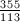,一共有8位有效数字.1706年Taylor的私人教师Machin利用反正切函数的Taylor级数展开式借助纸笔演算求出了的小数点后100位数字,目前计算的小数位数的世界纪录[1]保持者是日本科学家Yasumasa Kanada(金田康正),他于2002年在一台超级并行计算机上将的小数位数推进到了惊人的12411亿位.
级数法
Machin型公式
John Machin用来计算的公式是利用 的Taylor展开式可以得到这个公式的优点是第二项收敛得很快,而第一项的分母中含有5的方幂,便于手工在十进制下计算.考虑恒等式,两边同时取反正切得到再令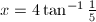就可以证明Machin公式.如果考察正切函数更复杂的恒等变换,可以得到一系列形如的公式,统称为Machin型公式,以
的Taylor展开式可以得到这个公式的优点是第二项收敛得很快,而第一项的分母中含有5的方幂,便于手工在十进制下计算.考虑恒等式,两边同时取反正切得到再令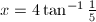就可以证明Machin公式.如果考察正切函数更复杂的恒等变换,可以得到一系列形如的公式,统称为Machin型公式,以 为例,其他三个2阶Machin型公式是
注意到,把三角恒等式看成有理分式形式的递推公式,就可以将寻找Machin型公式的问题转化成寻找高阶不定方程整数解的问题,据此还可以证明的Machin型公式只有以上四种,而
为例,其他三个2阶Machin型公式是
注意到,把三角恒等式看成有理分式形式的递推公式,就可以将寻找Machin型公式的问题转化成寻找高阶不定方程整数解的问题,据此还可以证明的Machin型公式只有以上四种,而 从1到21所有的Machin型公式共有1500种[2].不同Machin型公式的收敛速度可以用Lehmer数[3]来衡量,Lemher数越小公式收敛得越快.目前已知收敛最快的Machin型公式是黄见利[4]发现的
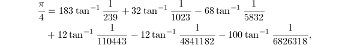
对应的Lehmer数是1.51244.
从1到21所有的Machin型公式共有1500种[2].不同Machin型公式的收敛速度可以用Lehmer数[3]来衡量,Lemher数越小公式收敛得越快.目前已知收敛最快的Machin型公式是黄见利[4]发现的
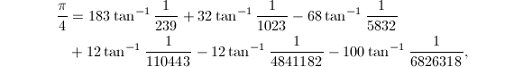
对应的Lehmer数是1.51244.
与其他的计算方法相比,Machin型公式更适合于并行计算.目前的小数位数世界纪录的保持者是日本科学家Yasumasa Kanada(金田康正),他于2002年在一台超级并行计算机上将的小数位数推进到了惊人的12411亿位,计算时采用了两个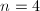的Machin型公式 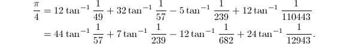
Ramanujan型公式
Ramanujan构造过一个的超几何级数展开式[5]后来Chudnovsky兄弟[6]和Borwein兄弟[7]又分别给出形如的三组公式,分别对应于,
和
![\begin{align*}
A &= 63365028312971999585426220 \\
&\quad + 28337702140800842046825600\sqrt{5} \\
&\quad + 384\sqrt{5} (10891728551171178200467436212395209160385656017 \\
&\qquad + 4870929086578810225077338534541688721351255040\sqrt{5})^{1/2},\\
B &= 7849910453496627210289749000 \\
&\quad + 3510586678260932028965606400\sqrt{5} \\
&\quad + 2515968\sqrt{3110}(6260208323789001636993322654444020882161 \\
&\qquad + 2799650273060444296577206890718825190235\sqrt{5})^{1/2},\\
C &= -214772995063512240 \\
&\quad - 96049403338648032\sqrt{5} \\
&\quad - 1296\sqrt{5}(10985234579463550323713318473 \\
&\qquad + 4912746253692362754607395912\sqrt{5})^{1/2}.
\end{align*}](latex/latex2png-Constant_36366546_.gif) 这四个公式统称为Ramanujan型公式,利用代数数论和二次域的知识还可以构造出更多这样的Ramanujan型公式[8],不同Ramanujan型公式的收敛速度可以用每计算一个级数项后结果所增加的十进制有效位数来衡量,以上这四个公式每向后计算一项,结果的有效位数分别大约增加8位,14位,31位和50位.
这四个公式统称为Ramanujan型公式,利用代数数论和二次域的知识还可以构造出更多这样的Ramanujan型公式[8],不同Ramanujan型公式的收敛速度可以用每计算一个级数项后结果所增加的十进制有效位数来衡量,以上这四个公式每向后计算一项,结果的有效位数分别大约增加8位,14位,31位和50位.
在个人计算机上计算时,Ramanujan型公式是最常用的级数展开式,它可以利用折半求和的技术来计算(见算法2).目前个人计算机上的小数位数世界纪录的保持者是由Steve Pagliarulo开发的QPI[9],它仅需数秒就能求出的前100万位,计算时采用的就是Chudnovsky公式.
BBP公式
最后值得一提的是Borwein兄弟和其合作者共同发现的BBP公式[10]注意到通项前的系数是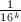,因此可以利用它直接求出在十六进制下某一个指定位上的数字,而不必先求出所有之前位上的数字.在此基础上Fabrice Bellard又提出了一个公式[11]
它比BBP公式要快43%,他还指出如果利用以及是的虚部,可以从Machin型公式构造出更多这样类似于BBP公式的公式.
迭代法
顾名思义,迭代法就是利用递推公式来计算,通过迭代逐步提高精度.将递推公式设法改写成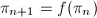的形式,则存在正整数 使得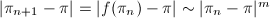,于是每迭代一步后的误差将变为原来误差的次幂,如果换一个角度来看,这就是说有效位数将变为原来有效位数的倍,因此可以用的大小作为衡量迭代法性能的指标.
使得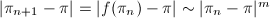,于是每迭代一步后的误差将变为原来误差的次幂,如果换一个角度来看,这就是说有效位数将变为原来有效位数的倍,因此可以用的大小作为衡量迭代法性能的指标.
代数几何平均值
首先来看Brent-Salamin算法[12],这是一个二阶收敛的迭代算法,它用到了Gauss-Legendre的AGM(代数几何平均值)[13]迭代.
如果将代数平均值或几何平均值换成更高阶的平均值,例如就可以得到更高阶的迭代结构. .令
.令 ,
, ,,,则
,,,则 ,
, 的代数几何平均值定义为
的代数几何平均值定义为
完全椭圆积分
为了利用AGM来计算圆周率,还需要用到完全椭圆积分的概念.
 是的有理函数,是
是的有理函数,是 的三次或四次多项式的积分称为椭圆积分.
这两个积分分别称为第一类和第二类完全椭圆积分,其中.
的三次或四次多项式的积分称为椭圆积分.
这两个积分分别称为第一类和第二类完全椭圆积分,其中.
记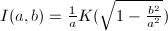,那么
通过变量替换可以得出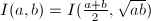,也可以写成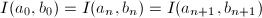,两边取极限得到 注意到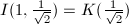,因此
类似的,记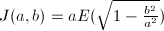,那么令,于是,再令,可以证明因此
若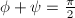,那么第一类与第二类完全椭圆积分之间存在勒让德关系令 就可以得到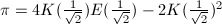,即也可以写成
就可以得到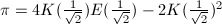,即也可以写成
Brent-Salamin算法
现在可以写出Brent-Salamin算法的详细过程了.
使用Brent-Salamin算法计算时,前三次迭代可以得到近似值高阶迭代公式
除了利用AGM之外,人们还发现了许多其他的高阶迭代公式,例如下面的三个著名的迭代公式[14]就是由Borwein兄弟发现的.

Beeler公式
最后值得一提的是Beeler利用不动点定理和反正切函数的Taylor展开式给出的一系列收敛到的递推公式[15]
其中初始值 应该取为的一个普通的近似值,例如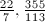等.
应该取为的一个普通的近似值,例如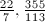等.
折半求和
折半求和[16]是用来计算超几何级数在有理点处的值的一项重要技术,在前面介绍级数法计算时已经提到过超几何级数,简单地来看,超几何级数就是一类特殊的幂级数.
许多函数都具有超几何级数的展开式,最简单的例子是,除此之外,初等函数一般都具有的展开式,高斯超几何级数定义为 那么 高斯超几何级数的下面两条性质也是经常被用到的.- 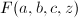是关于
 的微分方程的解.
的微分方程的解. - 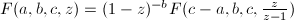.
许多数学常数可以看作超几何级数在某个有理点处的值,一般来说,超几何级数都可以改写成如下形式其中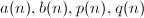都是整系数多项式.以Chudnovsky公式为例,先将通项改写成于是
相邻两项相除就可以解出, .
.
考虑部分和 记
再设,那么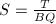.折半求和使用了一种类似于通分的技术构造出递推公式来计算,设满足,将区间分成两段及,分别用下标来表示对应这两个子区间的的值,例如,那么存在递推公式
记
再设,那么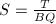.折半求和使用了一种类似于通分的技术构造出递推公式来计算,设满足,将区间分成两段及,分别用下标来表示对应这两个子区间的的值,例如,那么存在递推公式
现在可以写出折半求和算法的详细过程了.
使用折半求和计算出上的部分和后,再利用 做一次除法就可以求出原级数的部分和
做一次除法就可以求出原级数的部分和 .注意到最终结果只依赖于
.注意到最终结果只依赖于 和的比值,因此在折半求和计算的过程中,最后一步应用递推公式之前可以将先"约分",即将它们同时除以其最大公因子,这样一来由递推公式求出的都变为原来的倍,而比值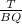则保持不变.为了快速地计算出,常用的技术是在计算过程中保留的部分素因子分解式,并在递推相乘时同步更新其部分素因子分解式.
和的比值,因此在折半求和计算的过程中,最后一步应用递推公式之前可以将先"约分",即将它们同时除以其最大公因子,这样一来由递推公式求出的都变为原来的倍,而比值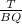则保持不变.为了快速地计算出,常用的技术是在计算过程中保留的部分素因子分解式,并在递推相乘时同步更新其部分素因子分解式.
从整体上来看,折半求和并没有减少运算次数,它只是让参与乘法的两个数的数量级更接近,这样就可以充分发挥Karatsuba,Toom-Cook和FFT等大整数快速乘法算法的优势.如果大整数乘法采用古典乘法算法,那么折半求和是不起作用的,甚至可能比普通的级数求和方法更慢.除此之外,折半求和实际上是将截断的级数先乘上分母的最小公倍数后再计算,这样可以避免对中间结果进行除法等不精确计算,而只需要在最后做一次除法.可以证明,采用折半求和算法计算出部分和的前 位有效数字大约需要次基本运算,其中
位有效数字大约需要次基本运算,其中 代表两个位整数相乘所需要的基本运算的次数(如果采用有限域上的FFT乘法,那么).折半求和利用两个独立的子区间的数据来合成整个区间的数据,因此也很适合于并行计算.
代表两个位整数相乘所需要的基本运算的次数(如果采用有限域上的FFT乘法,那么).折半求和利用两个独立的子区间的数据来合成整个区间的数据,因此也很适合于并行计算.
自然对数底
级数法
自然对数底常记为 ,它的定义为根据Newton二项式公式可以得到
记那么,即进一步还可以推出,和计算圆周率用到的很多级数的误差项不同,这个误差项很小,它关于是指数级收敛的,因此我们可以直接利用级数来计算自然对数底.除此之外,另一个级数也可以求出,它常常被用来验证第一个级数的计算结果,这两个级数都可以使用折半求和方法来计算.通过级数的计算公式还可以得到关于自然对数底和圆周率一个有趣的递推公式,令,,递推公式为
那么
,它的定义为根据Newton二项式公式可以得到
记那么,即进一步还可以推出,和计算圆周率用到的很多级数的误差项不同,这个误差项很小,它关于是指数级收敛的,因此我们可以直接利用级数来计算自然对数底.除此之外,另一个级数也可以求出,它常常被用来验证第一个级数的计算结果,这两个级数都可以使用折半求和方法来计算.通过级数的计算公式还可以得到关于自然对数底和圆周率一个有趣的递推公式,令,,递推公式为
那么
对数常数
级数法
对数常数指的是 ,在计算机被发明之前,科学家和工程师们只能借助于对数表和对数尺之类的工具来完成繁杂的乘除运算,注意到
,在计算机被发明之前,科学家和工程师们只能借助于对数表和对数尺之类的工具来完成繁杂的乘除运算,注意到 可以适当的选取使得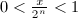,这样就需要计算来完成大数与标准区间之间的转换.利用的Taylor展开式令就可以得到的形式化定义如果令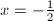,那么有进一步地,利用恒等式
可以适当的选取使得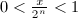,这样就需要计算来完成大数与标准区间之间的转换.利用的Taylor展开式令就可以得到的形式化定义如果令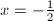,那么有进一步地,利用恒等式 ,还可以得到类似于计算圆周率时提到过的BBP公式的两个公式
,还可以得到类似于计算圆周率时提到过的BBP公式的两个公式

与计算圆周率类似,计算对数常数也有相应的Machin型公式.首先来看反正切函数的Taylor展开式令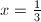,那么如果考虑类似于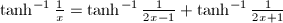的初等变换,还可以得到一系列的Machin型公式,其中最有名的是Euler用来计算 时用到的除此之外,人们最近还发现了一些高阶的Machin型公式,例如
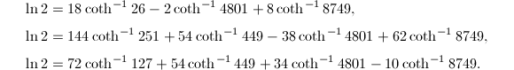
时用到的除此之外,人们最近还发现了一些高阶的Machin型公式,例如
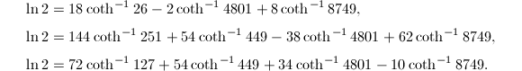
前面介绍超几何级数时提到过 于是有这个公式结构简单,很容易利用折半求和方法来计算它.
迭代法
代数几何平均值(AGM)迭代同样适用于计算对数常数[12],记 可以看出
可以看出 实际上就是
实际上就是 .那么
.那么 取作为的近似值,依然借用计算
取作为的近似值,依然借用计算 时的迭代结构,那么在计算的同时就可以计算出
时的迭代结构,那么在计算的同时就可以计算出 ,进而可以计算出,这样就得到了计算的一个二阶收敛的迭代算法.
,进而可以计算出,这样就得到了计算的一个二阶收敛的迭代算法.
Euler常数
级数法
Euler常数常记为 ,它的定义为如果直接按照这个定义来计算将会发现它收敛得太慢了,利用Euler-Maclaurin积分和Bernoulli数的定义可以得到一个更好的级数展开式它的误差项是
,它的定义为如果直接按照这个定义来计算将会发现它收敛得太慢了,利用Euler-Maclaurin积分和Bernoulli数的定义可以得到一个更好的级数展开式它的误差项是
将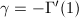分部积分后可以得到
注意到,利用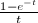的级数展开式可以得到于是引入常数 是为了使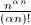是阶的,其近似值为.如果考虑
是为了使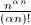是阶的,其近似值为.如果考虑 的渐进展开式,还可以得到收敛更快的公式,不过公式的形式同时也会变得很复杂.使用Bessel函数做类似的工作,我们将得到其中
的渐进展开式,还可以得到收敛更快的公式,不过公式的形式同时也会变得很复杂.使用Bessel函数做类似的工作,我们将得到其中
这里的定义与上面相同,这个级数收敛得很快,并且很容易计算.使用类似于Richard外推加速法的技术对误差项进行渐进展开,可以得到其中并且满足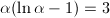,其近似值为,利用这个公式可以计算到小数点后1亿位.
其他常数
下面是一些其他数学常数的定义或常用计算公式.
- Catalan常数.
- Brun常数.
- Mertsen常数.
参考文献
[1]Current published world record of pi calculation, http://www.super-computing.org/pi_current.html.
[2]Machin-Like Formulas. From MathWorld--A Wolfram Web Resource
[3]On Arccotangent Relations for ., Amer. Math. Monthly 45 (1938), 657-664.
[4]More Machin-Type Identities., Math. Gaz. 81 (1997), 120-121.
[5]Ramanujan's Notebooks, Part IV, Springer-Verlag, New York, 1994.
[6]Approximations and Complex Multiplication According to Ramanujan, Ramanujan Revisited: Proceedings of the Centenary Conference, University of Illinois at Urbana-Champaign, June 1-5, 1987, Academic Press, 1987, 375-472.
[7]More Ramanujan-Type Series for 1/PI, Ramanujan Revisited: Proceedings of the Centenary Conference, University of Illinois at Urbana-Champaign, June 1-5, 1987, Academic Press, 1988, 359-374.
[8]Pi Formulas. From MathWorld--A Wolfram Web Resource
[9]Stu's pi page, http://home.istar.ca/~lyster/otherconstants.html.
[10]On the computation of the n'th decimal digit of various transcendental numbers, Mathematics of Computation (1996).
[11]A new formula to compute the n'th binary digit of pi, Bellard's Website (1997).
[12]Multiple-precision zero-finding methods and the complexity of elementary function evaluation, Analytic Computational Complexity (1975), 151-176.
[13]Pi and the AGM, Addison-Wesley Longman Publishing Co., Inc., 1987.
[14]Ramanujan, Modular Equations, and Approximations to Pi, or How to Compute One Billion Digits of Pi, Amer. Math. Monthly 96 (1989), 201-219.
[15]HAKMEM, MIT Artificial Intelligence Laboratory, Memo AIM-239, Cambridge, MA, 1972.
[16]Computer algebra in the service of mathematical physics and number theory, Computers and Mathematics 09 (1990), 232.